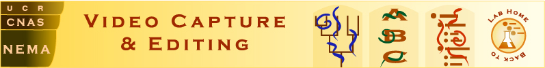

Example of a completely captured nematode:
Panagrobeles stammeri strain PDL0024, male 10b
(cf. redescription by Stock et al. 2002; kept in the UCDavis Nematode
Collection)
Click here for the scale bars
Click on the appropriate magnification number below to open the relevant
image or clip.